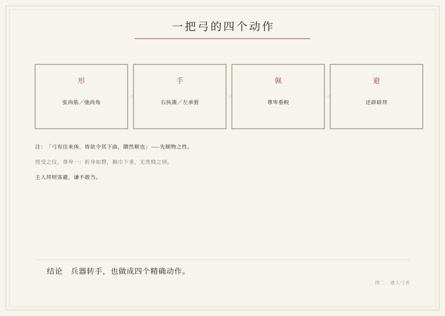

曲礼上 · 一·九十 · 第 90 课
赠人以弓，张着的弓使筋面朝上，弛着的弓使角面朝上；右手执弓梢，左手托弓把；授受之际尊卑同垂佩巾；若主人行拜礼，客人要退避，不敢当拜。
说什么事：凡遗人弓者，张弓尚筋，弛弓尚角；右手执箫，左手承弣；尊卑垂帨；若主人拜，则客还辟，辟拜。
落在哪一层：仪，兼及敬。一节之内，形、手、佩、避四事。
为何编在此位：上节献诸物，此节专言弓。弓是兵器而兼礼器，其授受之法最细。
【经】凡遺人弓者，張弓尚筋，弛弓尚角；右手執簫，左手承弣；尊卑垂帨；若主人拜，則客還辟，辟拜。
【注】弓有往來體，皆欲令其下曲，隤然順也。遺人無時，已定體則張之，未定體則弛之。簫，弭頭也，謂之簫。簫，邪也。弣，把中。帨，佩巾也。磬折則佩垂，授受之儀，尊卑一。辟拜，謙不敢當。
张弓、弛弓 张，上弦；弛，解弦。疏与注皆以「往来体」为说：弓体有张弛两态。
尚筋、尚角 注「皆欲令其下曲，隤然顺也」。筋在外则弓向下弯，角在外亦然；所尚者，使弓呈顺下之形。
箫 注「箫，弭头也，谓之箫。箫，邪也」。弓之两端曰弭，其头曰箫，取斜出之形。
弣 注「弣，把中」；疏「把中」，手执之处。
帨 注「帨，佩巾也」。疏「磬折则佩垂」——躬身如磬之折，则佩巾自然下垂。
还辟 注「辟拜，谦不敢当」。还，转身；辟，避。
遗人无时 注：「遗人无时，已定体则张之，未定体则弛之」。赠人非必有定时，故随弓之状态而定其尚。
凡赠人以弓，张着的弓使筋面朝上，弛着的弓使角面朝上；右手执弓梢，左手托弓把；授受之时，尊者卑者都躬身使佩巾下垂；若主人行拜礼，客人就退身避开，不敢受拜。
一节写一把弓怎么递过去。弓有张弛两体，故有两样朝向；手持之处各有其名；授受时身要折到佩巾下垂；受者若拜，赠者要退。礼把一件兵器的转手，做成了四个精确动作。
第一层 顺其体 注「皆欲令其下曲，隤然顺也」。弓本有弯势，授人时顺其势而不逆，是把物的性子先顾到。
第二层 箫与弣 右手执梢，左手承把。一手一端，是把弓稳稳托住；不是随手一递。
第三层 尊卑垂帨 注「授受之仪，尊卑一」。折身到佩巾下垂，是授受的共同姿态——礼在这里没有贵贱之分。
第四层 还辟辟拜 主人拜，客避。注「谦不敢当」。受赠而当主人之拜，是以尊者自处，故避。
与今日何干 递刀给人，刃口朝己、柄朝人；递剪子亦然。此节不问古今，只问「顺不顺、伤不伤」。
| 左 | 右 |
|---|---|
| 张弓尚筋 | 已上弦，筋面朝上 |
| 弛弓尚角 | 已解弦，角面朝上 |
| 令其下曲 | 顺弓之弯势，隤然向下 |
| 右手执箫 | 执弓梢（弭头） |
| 左手承弣 | 托弓把之中 |
| 尊卑垂帨 | 折身如磬，佩巾下垂 |
| 还辟辟拜 | 退避，不敢当主人之拜 |
画两弓并列：左弓上弦、筋面朝上、弓身向下弯；右弓解弦、角面朝上、弓身亦呈弯势。两弓之间一只素色佩巾自上方垂下，示折身之姿。不画人、不写文字。赭色只在左弓弦与右弓弭头。
